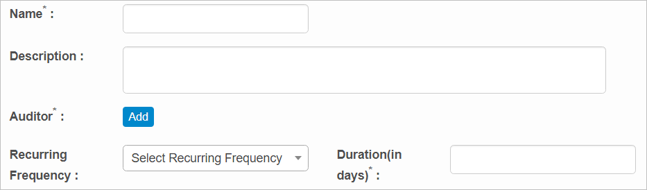

CI: Audits
Use this function to
| 1. | In the navigation pane, select ITSM >Configuration Management > CMDB. The Configuration Items window displays. |
| 2. | In the navigation pane, select Configuration Management > CMDB. The Configuration items window displays. |
| 3. | Select a record in the list. A new window opens and the Details tab displays. |
| 4. | Click the Audits tab. A list of existing audits displays. |

| 1. | Click New Audit. |
| 2. | Enter a Name and Description. |
| 3. | In the Auditor field, click Add, then search for and select an Auditor. |
| 4. | For Recurring Frequency, click the drop-down list and select the frequency, such as Daily, Weekly, and so forth. |
| 5. | Enter the audit Duration in days. |
| 6. | When all selections/entries are made, click Add. |

| 1. | With the list of Audits displayed, select an audit in the list. |
| 2. | Make the necessary changes. |
| 3. | Click Save. |
| Deleting is a permanent action and cannot be undone. Deleting may affect other functionality and information in the application such as data in configured reports, fields in windows, selectable options, etc. Therefore, be sure to understand the potential effects before making a deletion. |
| 1. | With the list of Audits displayed, select an audit in the list. |
| 2. | Select a line item. |
| 3. | Click Delete. |